I'm Rahim. My talk "AI for Small Business" was planned by talking to Claude in my car, and built as 28 animated slides in code with Claude Code and HeyGen HyperFrames. No slide software, no live demos. Here's the whole process, start to finish.
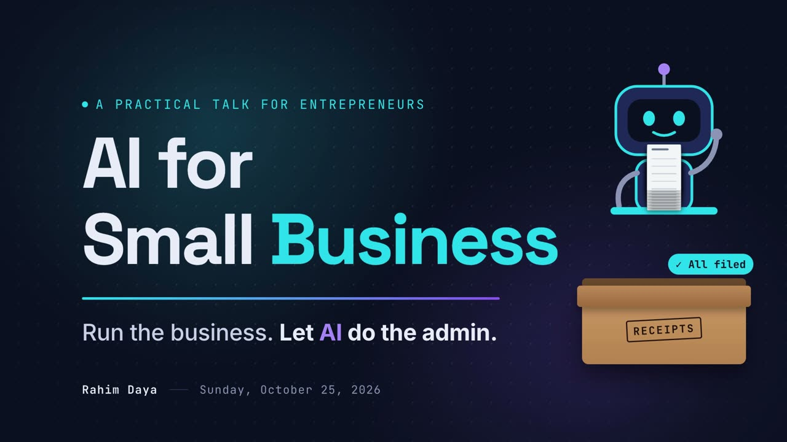
Part 1 was about deciding what to say. Part 2 turned that plan into a finished, presentable deck, with a lot of back-and-forth along the way.
Brainstormed the talk out loud with Claude.
Picked the story, demos and planted surprises.
Rate sheet, past quote, receipts, a written handoff.
Every slide written as an animated HTML scene.
About a dozen rounds of "change this, split that".
Presenter deck, public web deck, backup video, notes.
I set one rule early: ideas first, no deck until we picked a direction. Most of that thinking happened in voice mode while driving, then carried on in text chat in Claude desktop.
A fictional one-person event planner in Scarborough, near Victoria Park Station, with suppliers and venues named after real local streets.
An earlier version used a deck-building contractor. We dropped it for knowledge work, which more of the audience could relate to.
After a client meeting (a holiday party for Taylor Creek Dental), a 90-second voice note goes to AI twice.
A folder of mixed PDFs and phone photos turns into a table of every document, consistently renamed files sorted into folders, and a list of bills due, money owed and anything odd.
The first animated clip came out of the HyperFrames cloud connector looking too basic. So Part 1 ended with a written handoff file and the demo assets, and the build moved to Claude Code on my Mac.
HyperFrames is HeyGen's open-source framework for making video out of web pages. Instead of an AI guessing at pixels, Claude Code writes HTML, CSS and GSAP animation code, and HyperFrames renders it frame by frame into crisp MP4 clips. Every word and number on screen is exact, and any change is a quick edit and re-render.
Claude Code confirmed the local HyperFrames skills and command-line tools, read the Part 1 handoff and demo files, and proposed a slide-by-slide storyboard. I rewrote the key messages before anything was built:
I also chose to build the presentation itself in HyperFrames (with presenter mode and speaker notes), with MP4 backups of every clip, instead of Google Slides.
Rather than generating everything at once, I asked for just the opening and the first demo clip so I could judge the look. A brand file set the "Midnight Signal" palette and fonts, and every scene passed HyperFrames' lint and check gates (layout, overlap, contrast) and was reviewed from still frames before rendering.
HyperFrames' cloud publishing worked, but claiming the project was temporarily disabled. So Claude Code built a lightweight web player with the same clips and published it on GitHub Pages, with a full-length backup video and a shareable speaker-notes doc for my reviewer.
The final deck runs in a browser with presenter mode, in the public web player, and as a 14-minute backup video that advances on its own.
Every frame below is from a rendered HyperFrames clip. It's all HTML, CSS and animation code, with no screen recording.
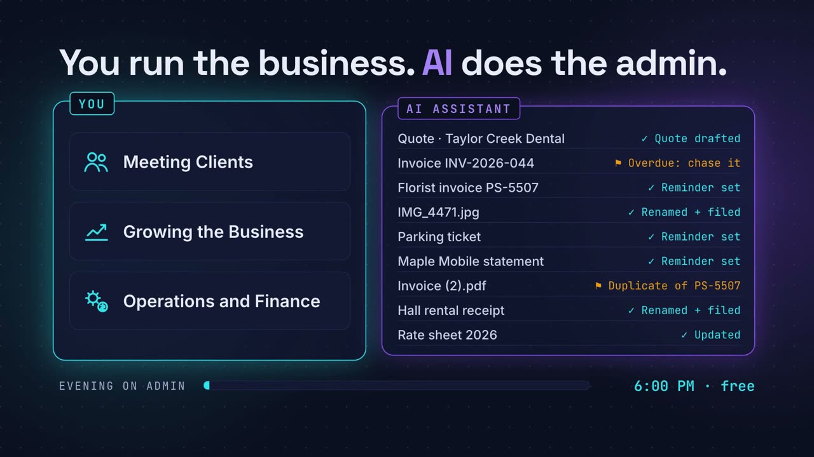
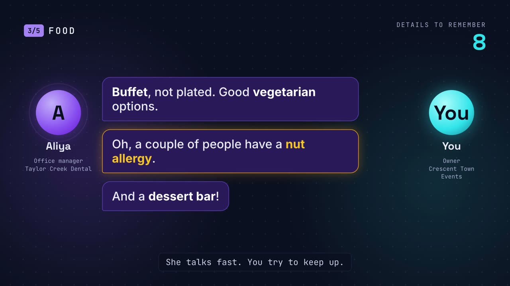
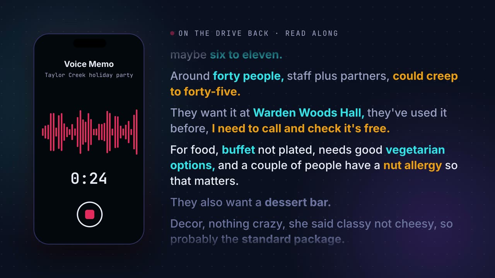
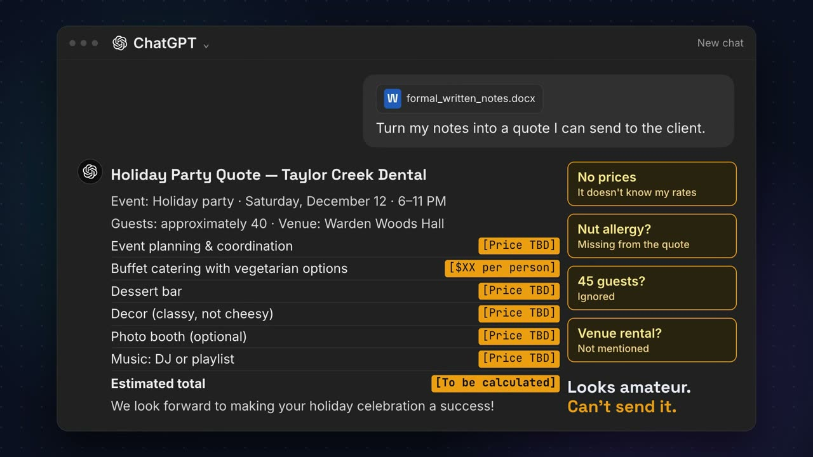
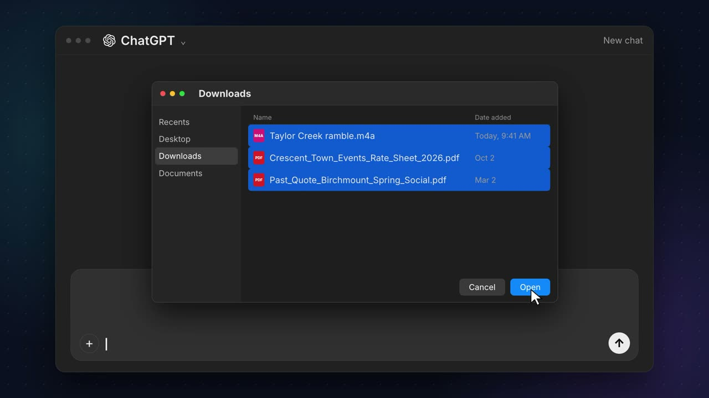
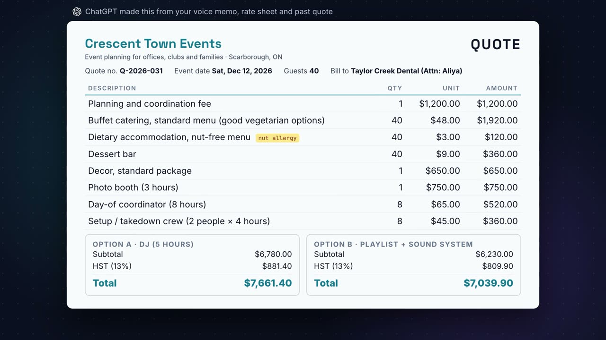
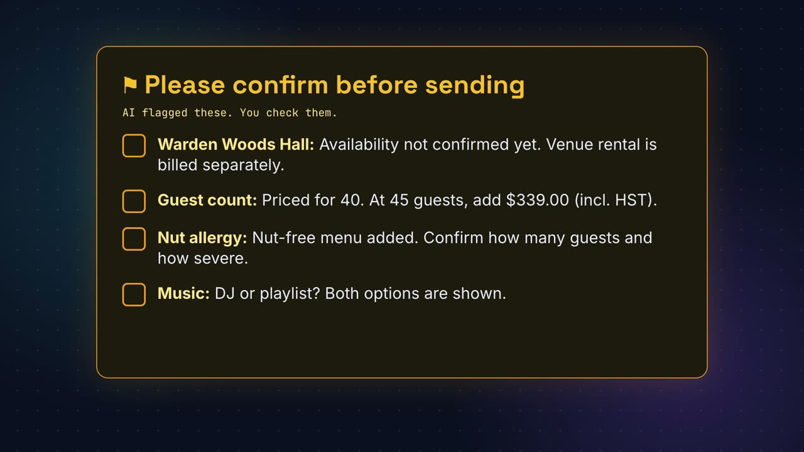
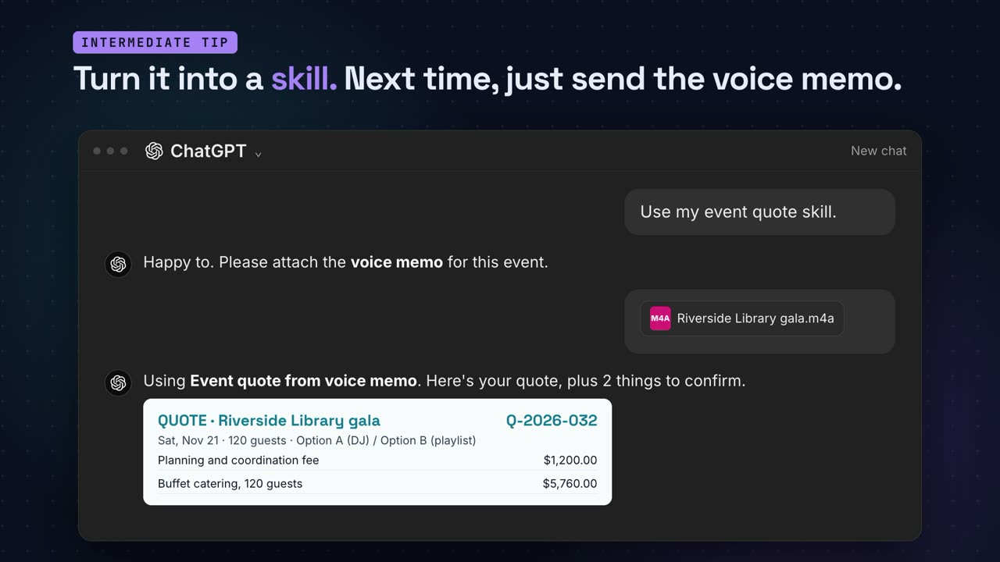
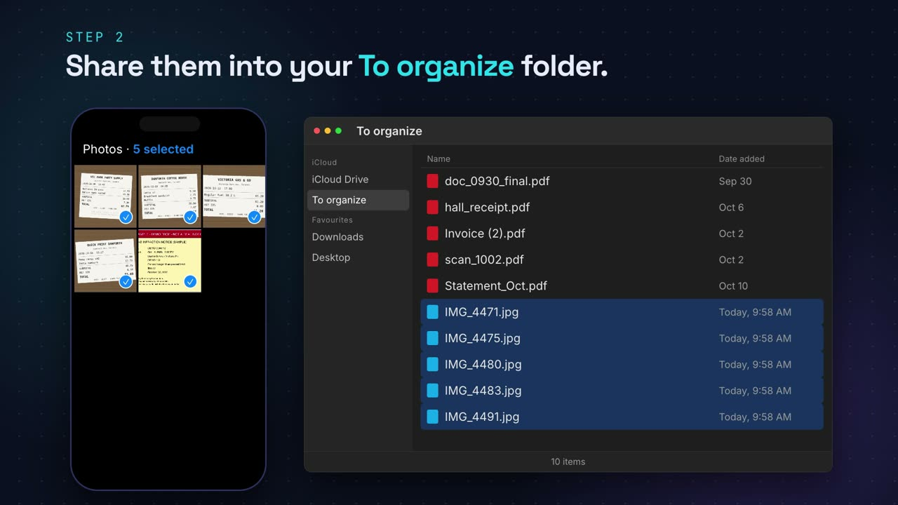
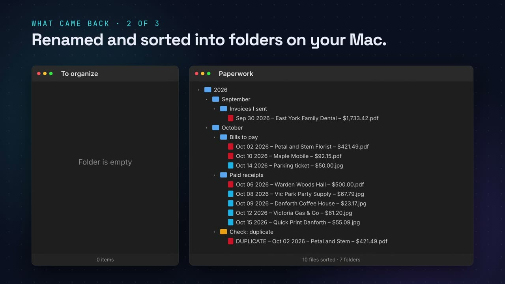
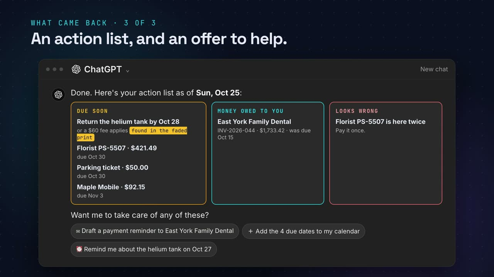
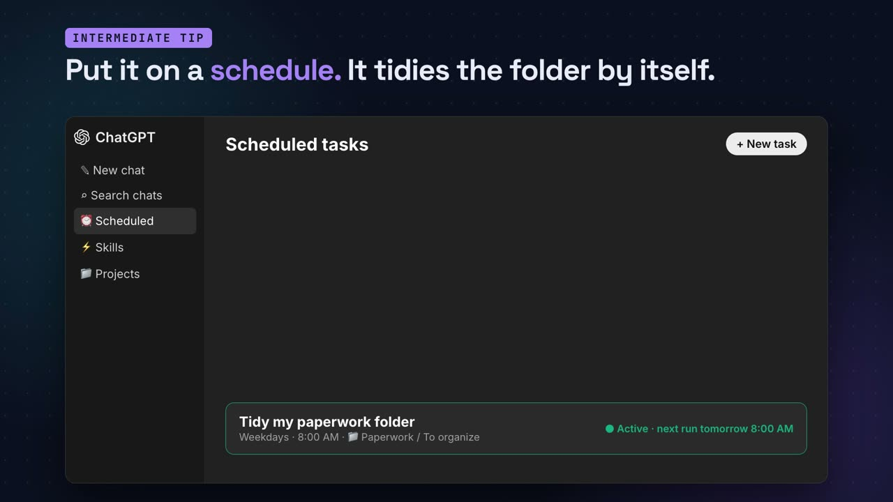
| Tool | What it did |
|---|---|
| Claude voice modePART 1 | Hands-free brainstorming in the car: the audience, the story and the demo ideas. |
| Claude desktop chatPART 1 | Settled the direction, wrote the ramble script and prompts, and generated the demo files and planted surprises. |
| Claude Code CLIPART 2 | Built everything else from my plain-English requests: storyboard, scenes, numbers, fixes, renders, publishing. |
| HeyGen HyperFramesPART 2 | Open-source HTML-to-video framework. Its local skills and CLI were used to write scenes, run lint/check gates, snapshot frames, render MP4s, and run the presenter-mode slideshow. |
| GSAPPART 2 | The animation library behind every motion: typing, bubbles, cursors, seamless loops. |
| FFmpegPART 2 | Cut clips into click-controlled slides and stitched the 14-minute backup video. |
| Web searchPART 2 | Fact-checked product claims before they went on a slide: audio uploads, Skills, Scheduled tasks, privacy settings. |
| Claude DocsPART 2 | A shareable speaker-notes doc with a script and timing for every slide. |
| GitHub PagesPART 2 | Free public hosting for the web deck (and this page), published with the GitHub CLI. |
| Headless Chrome testsPART 2 | After every change, an automated pass clicked through all slides to confirm each clip plays. |
Voice mode is great for thinking out loud. Settle the story before anyone builds a slide.
Real rate sheets, receipts and photos made the demos believable, and the numbers correct.
Four slides told me whether the style worked before investing in all 28.
Asking "can it really do that?" caught that Claude's chat can't take audio files, before I promised it.
I reviewed every round and asked for splits wherever I wanted to pause. AI drafts, I decide.
A public link, a local deck and a backup video meant nothing could sink the talk.
Use ← → to move between slides, N for speaker notes, F for fullscreen.